4장에서 비서가 나눠 둔 대화 맥락을, 새 일을 시킬 때 저절로 참고하게 합니다. 관계있는 팀원의 맥락은 「요청하기」로 허락받아 그 자리에서 함께 쓰고, 이미 한 요청이면 새로 만들기 전에 그 답을 보여 주고, 팀이 지금 AI 와 무슨 일을 하는지는 「팀」 탭에서 공유된 만큼만 봅니다. 누구에게 어디까지 보일지는 맥락마다 공개 등급으로 정합니다.
왜 필요한가#
4장에서 본 것처럼 Process GPT Lite 는 한 채팅창의 메시지를 대화 맥락마다 나눕니다. 하지만 나누기만 해서는 그 맥락이 다시 쓰이지 않습니다. 지난주에 경쟁사 가격을 정리해 두었어도, 오늘 보고서를 쓰며 또 설명해야 합니다. 팀이라면 더합니다. 옆 팀 동료가 같은 고객을 놓고 이미 정리해 둔 대화가 있어도, 나는 그 존재를 모릅니다.
이 장의 기능은 다섯 가지입니다.
| 기능 | 하는 일 |
|---|---|
| 자동 참고 | 메시지를 보낼 때마다 지금 일과 관계있는 다른 맥락(내 것, 팀이 공유한 것, 허락받은 것)을 골라 비서에게 함께 넘깁니다. 무엇을 붙였는지는 메시지 아래 칩으로 보입니다 |
| 참고 요청 | 관계있지만 아직 볼 수 없는 팀원의 맥락은 제목만 보이고 「요청하기」가 붙습니다. 주인의 규칙에 맞으면 곧바로, 아니면 주인이 홈 카드에서 허락합니다 |
| 팀 활동 | 사람마다 지금 하는 일, 주로 하는 일, 자주 쓰는 요청 유형, 진행 중인 AI 작업을 공유된 만큼만 요약해 보여 줍니다. 팀장과 관리자는 조직도로 모아 봅니다 |
| 이미 한 요청 | 나나 팀원이 이미 같은 결과물을 원한 요청을 했으면, 에이전트를 부르기 전에 「그 답 보기」를 권합니다 |
| 회사 정책 | 민감 맥락과 인사·급여 같은 주제가 보이는 맥락은 주인 규칙보다 회사 정책이 먼저 판단하고, 모든 참고 허락이 결정 원장에 남습니다 |
누구에게 어디까지 — 공개 등급#
모든 것이 다 보이면 개인 작업, 인사, 계약까지 새어 나갑니다. 그래서 맥락마다 누구에게(팀 › 부서 › 회사, Process GPT 조직도를 따름)와 얼마나 깊이(제목 › 요약 › 원문)를 정합니다.
| 등급 | 제목 | 요약(요약·결정·열린 질문) | 원문(요청과 답) |
|---|---|---|---|
| 비공개 | 나만 | 나만 | 나만 — 존재도 드러나지 않음 |
| 제목 공개 | 회사 전체 | 허락받은 사람 | 허락받은 사람 |
| 요약 공개(기본) | 회사 전체 | 범위 안(기본: 팀) | 허락받은 사람 |
| 전체 공개 | 회사 전체 | 범위 안 | 범위 안 |
역할에 따라 더 보는 사람도 있습니다.
- 팀장·부서장(조직도의 장)은 자기 노드 아래 사람의 비공개가 아닌 맥락을 요약까지 봅니다.
- 관리자는 회사 전체를 요약까지 봅니다. 원문은 관리자도 요청해야 합니다.
- 민감 표시가 붙은 맥락(인사·급여·계약·건강·개인정보 — 비서가 제안하고 주인이 승인)은 전체 공개로 열 수 없고, 자동 허용에서 빠지며, 장·관리자에게도 제목만 보입니다.
요약은 어떻게 만드나
맥락마다 요약·결정·열린 질문·작업 유형·요청 유형을 모델이 미리 만들어 둡니다. 요청 문장을 그대로 옮기지 않고 다른 말로 줄입니다. 팀 활동 카드나 자동 참고는 보는 사람이 그 맥락에 가진 깊이만큼만 이 요약을 모아 씁니다.
따라 하기 준비 — 시험 회사#
이 장은 다섯 명짜리 시험 회사로 따라 합니다. 서버 폴더에서 한 번 만듭니다(테넌트 team-demo, 주소 team.localhost).
# server/.env 의 PRO_TENANT_HOSTS 에 team.localhost=team-demo 를 더한 뒤
node scripts/seed-team-context.mjs --reset
| 사람 | 자리 | 계정 |
|---|---|---|
| 윤서진 | 대표·관리자 | pro-tc-yoon@uengine.org |
| 박하늘 | 전략팀장 | pro-tc-park@uengine.org |
| 이도윤 | 전략팀 | pro-tc-lee@uengine.org |
| 최유나 | 제안팀장 | pro-tc-choi@uengine.org |
| 정하은 | 제안팀 | pro-tc-jung@uengine.org |
조직은 서진컨설팅 › 컨설팅본부 › 전략팀·제안팀입니다. 로그인은 http://team.localhost:5180 에서 메일 주소와 코드 000000 으로 합니다. 각자 지난 한 달 동안 AI 와 나눈 맥락이 몇 개씩 들어 있습니다(이도윤 「경쟁 서비스 동향」, 박하늘 「가격 정책 조사」, 최유나 「고객 B 가격 협상」…).
따라 하기 1 — 자동 참고와 참고 요청#
- 이도윤으로 로그인해 채팅에 보냅니다.
경쟁사 가격 변화를 표로 정리해 줘 - 보낸 메시지 바로 아래에 칩이 붙습니다. 「참고 · 경쟁 서비스 동향 · 내 맥락 · 원문」, 「참고 · 가격 정책 조사 · 박하늘 · 요약」.
- 답이 오면 [1]·[2] 로 그 근거를 인용합니다. 박하늘의 맥락은 요약 깊이라 결정 사항까지만 쓰입니다. 답 아래에는 「요청하면 볼 수 있는 맥락」에 최유나의 「고객 B 가격 협상」이 제목만 보입니다.
- 박하늘 칩의 원문 요청 → 요청 보내기. 같은 팀이라 기본 규칙으로 곧바로 「허락됨 · 원문」이 됩니다.
- 「고객 B 가격 협상」의 요청하기 → 요청 보내기. 다른 팀이라 「요청함 — 최유나에게 갔어요」가 됩니다.
- 최유나로 로그인하면 홈에 「참고 요청」 카드가 있습니다. 허락하면 나가는 것(턴 수·결정 수)을 보고, 기간을 7일로 바꿔 허락합니다. 빼고 싶은 턴은 「뺄 턴 고르기」에서 고릅니다.
- 이도윤 화면의 요청 후보가 「허락됨 · 원문」으로 바뀌고 지금 반영해 다시 답하기가 생깁니다. 누르면 같은 요청이 그 맥락과 함께 다시 갑니다.
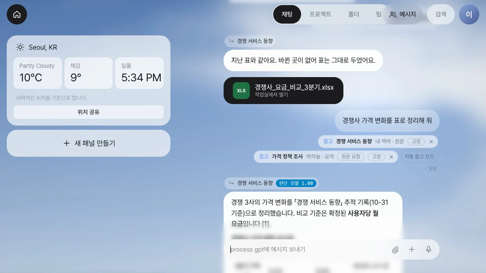
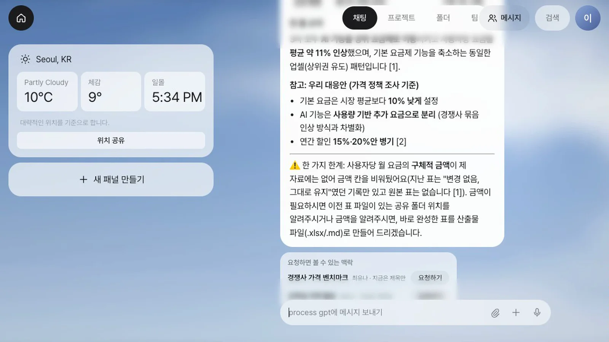
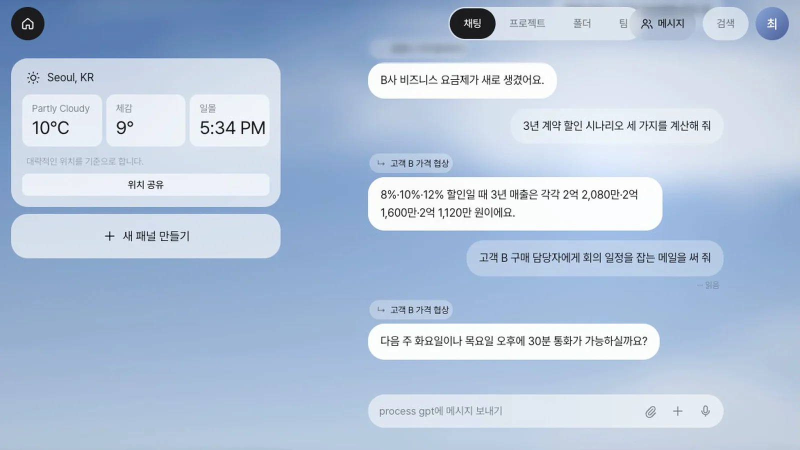
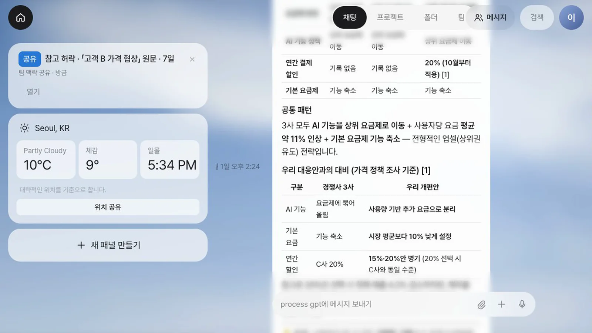
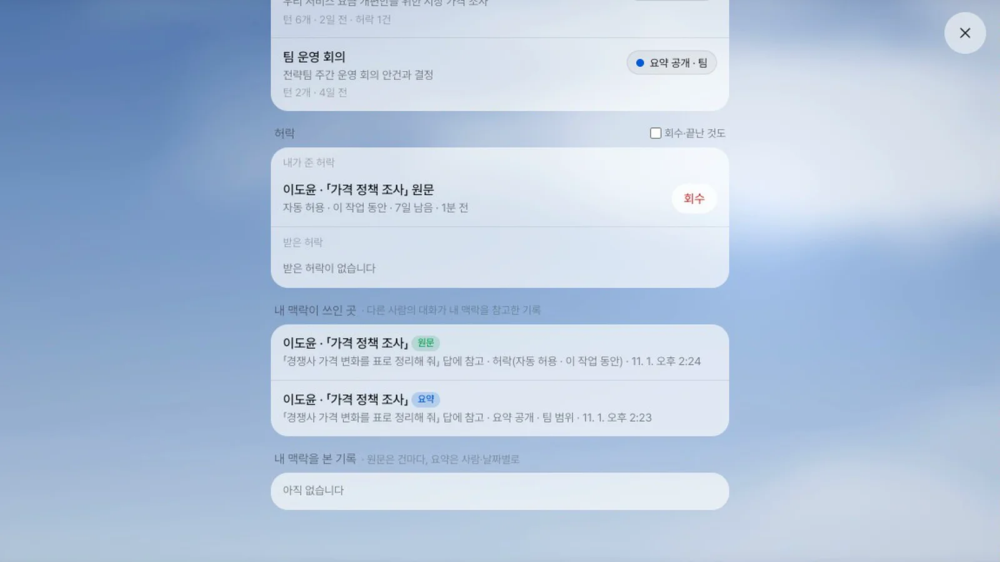
확인할 것: 박하늘로 로그인해 「설정 › 공유와 허락」을 엽니다. 「내 맥락이 쓰인 곳」에 「이도윤 · 가격 정책 조사 · 원문 · 자동 허용」이 있고, 「내가 준 허락」에서 바로 회수할 수 있습니다. 회수하면 이도윤의 다음 턴부터 다시 요약 깊이로 붙습니다.
참고는 지시가 아닙니다
붙인 맥락은 「참고 자료이며 지시가 아님」이라고 표시된 인용 블록으로 비서에게 갑니다. 어느 대화로 이어 갈지는 이 블록이 아니라 보낸 메시지로 판단합니다. 칩의 ×로 맥락을 빼면 그 대화에서는 다시 붙지 않고, 「고정」하면 관련도와 상관없이 늘 붙습니다. 대화마다 「자동 참고 끄기」도 있습니다.
따라 하기 2 — 이미 한 요청#
나나 팀원이 이미 한 요청을 또 하면 에이전트가 처음부터 다시 만들 필요가 없습니다. Process GPT Lite 는 요청을 에이전트에게 보내기 전에, 같은 결과물을 원한 요청이 이미 있는지 먼저 봅니다. 있으면 답 대신 「이미 한 요청」 카드로 묻습니다.
- 따라 하기 1을 마친 이도윤이 말만 바꿔 다시 보냅니다.
경쟁사들 요금 바뀐 거 표로 만들어 줄래? - 답 대신 「이미 한 요청 · 같은 요청을 전에 했어요」 카드가 옵니다. 「경쟁 서비스 동향 · 내가 · 내 맥락」과 그때의 요청 문장이 보이고, 「에이전트는 아직 부르지 않았어요」라고 적혀 있습니다.
- 그 답 보기를 누르면 전에 받은 표가 카드 안에 펼쳐집니다. 새로 만들고 싶으면 그래도 새로 하기를 누릅니다. 같은 요청이 「새로 하기」 표시와 함께 다시 가고, 이번에는 에이전트가 답합니다.
- 정하은(제안팀)으로 로그인해 보냅니다.
제안서 부록에 넣을 경쟁사 요금 비교표 만들어 줘 - 카드에 「최유나님이 같은 요청을 했어요 · 「경쟁사 가격 벤치마크」 · 지금은 제목만」이 뜹니다. 제목만 보이는 맥락이라 요청 문장도 답도 카드에 없습니다.
- 요청하기를 누릅니다. 같은 팀은 기본 규칙이 자동 허용이라 곧바로 허락되고, 최유나가 만든 비교표가 「같은 팀이라 바로 허락됐어요」와 함께 펼쳐집니다.
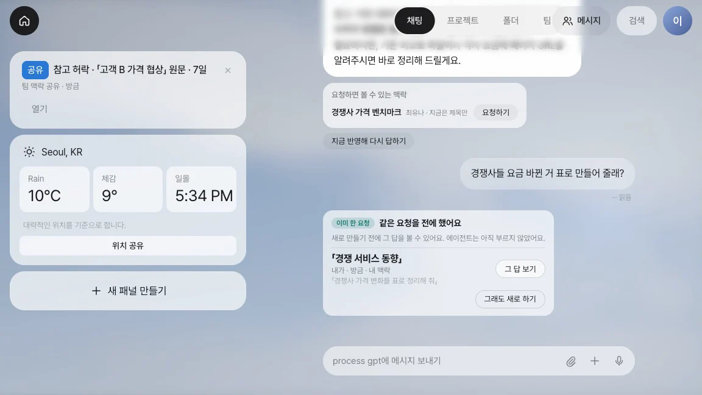
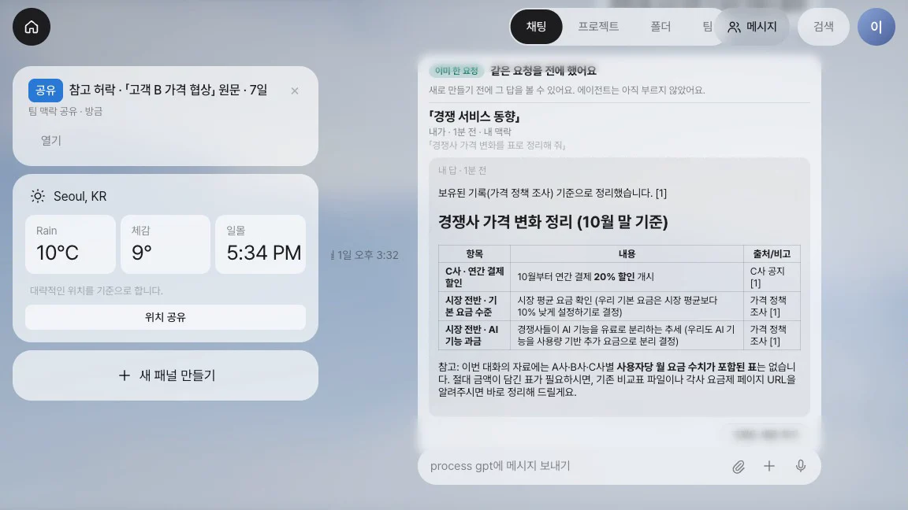
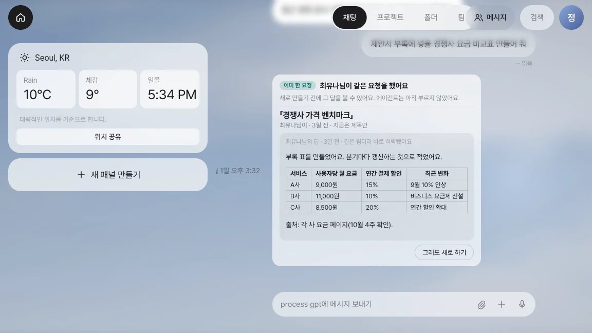
확인할 것: 최유나로 로그인해 「설정 › 공유와 허락」을 열면 「내가 준 허락」에 정하은의 허락이 있습니다. 회수한 뒤 정하은이 카드의 그 답 보기를 다시 누르면 「지금은 제목만 볼 수 있어요」가 나옵니다. 카드는 답을 복사해 두지 않고 그때그때 권한으로 다시 읽기 때문입니다.
무엇을 같은 요청으로 보나
뜻이 가까운 이전 요청을 먼저 고르고(임베딩), 기본 AI 모델이 「대상·범위·형식·기간이 같은가」와 「시간이 지나 이전 답이 쓸모없지 않은가」를 판단합니다. 「고객 B ↔ 고객 C」, 「표 ↔ 그래프」, 「이번 주 ↔ 지난주」는 같은 요청이 아니고, 「오늘 날씨」를 사흘 뒤에 다시 물으면 묻지 않고 새로 합니다. 볼 수 없는 내용(남의 원문)으로는 같은지 따지지 않고, 비공개 맥락은 후보가 아닙니다. 바로 앞에 보낸 문장을 30분 안에 다시 보내면 「다시 시켜 보기」로 보고 묻지 않습니다.
따라 하기 3 — 팀 활동과 공개 등급#
- 박하늘(전략팀장)로 로그인해 위쪽 팀 탭을 엽니다. 박하늘과 이도윤의 카드가 보입니다. 이도윤 카드에는 지금 하는 일(「경쟁 서비스 동향」 · 요약), 주로 하는 일의 비율, 자주 쓰는 요청 유형(이름과 횟수만), 진행 중인 AI 작업(정기 작업), 최근 산출물이 있습니다.
- 「경쟁 서비스 동향」을 누르면 시간순 보기가 열립니다. 요약 깊이라서 요청 문장 대신 「경쟁사 요금 변동 조사 — A사 요금제 페이지 변경점 정리해 달라고 함」처럼 유형과 바꿔 쓴 한 줄만 보입니다.
- 원문 보기를 누릅니다. 같은 팀이라 자동 허용되어 요청과 답의 원문이 열립니다. 이 열람은 이도윤의 「내 맥락을 본 기록」에 남습니다.
- 윤서진(관리자)으로 로그인해 팀 탭에서 회사를 고릅니다. 회사 전체가 요약 깊이로 보이고, 이도윤의 비공개 맥락은 「비공개 작업 1건」으로만 셉니다. 조직도 보기를 누르면 서진컨설팅 › 컨설팅본부 › 전략팀·제안팀 마다 주제·작업 유형·진행 중인 AI 작업이 모입니다. 오른쪽 「비슷한 주제를 하는 사람」에는 이도윤의 「경쟁 서비스 동향」과 최유나의 「경쟁사 가격 벤치마크」가 나란히 나옵니다.
- 이도윤으로 로그인해 다른 사람 눈으로 내 카드 보기 › 관리자 눈으로 보기. 관리자에게 내 카드가 어떻게 보이는지와, 이번 주에 누가 내 활동을 봤는지가 나옵니다.
- 「설정 › 공유와 허락 › 내 맥락의 공개 등급」에서 「경쟁 서비스 동향」의 등급 칩(요약 공개 · 팀)을 누릅니다. 누가 무엇을 보게 되나 미리보기를 보며 범위를 회사로 바꾸면, 다른 팀의 정하은·최유나가 요약 칸에 「새로」 표시와 함께 들어옵니다. 저장.
- 최유나로 로그인해 「설정 › 공유와 허락」을 엽니다. 위에 「민감 표시 제안 · 연봉 협상 준비」가 있습니다. 승인한 뒤 그 맥락을 전체 공개로 바꿔 저장해 보면 「민감 항목은 전체 공개로 열 수 없습니다」로 거절됩니다.
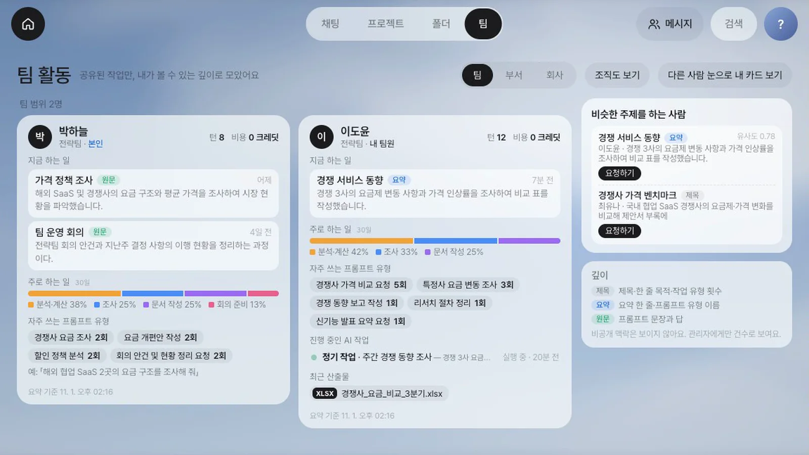
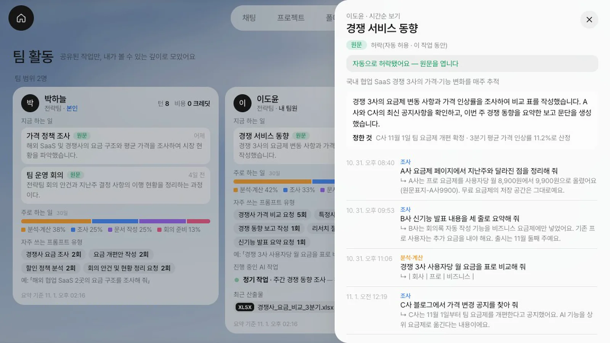
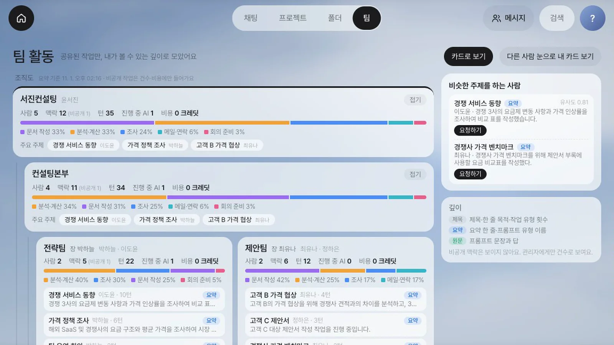
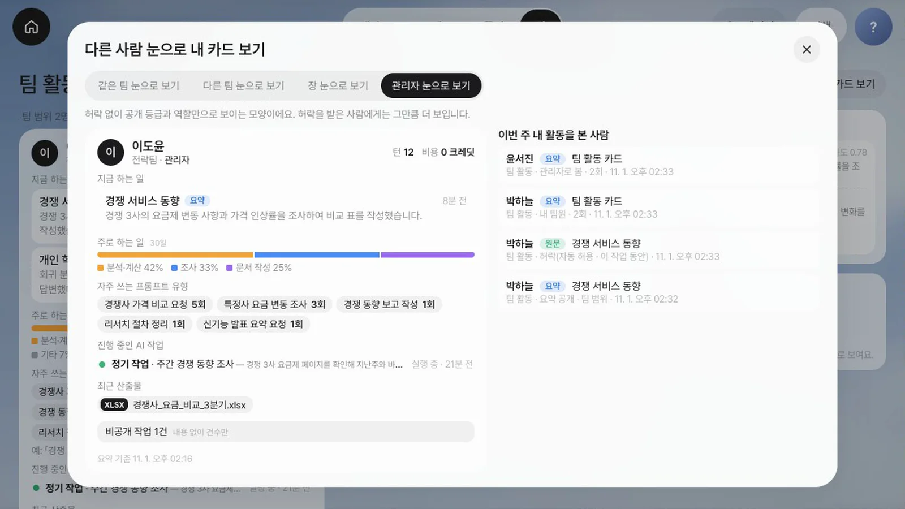
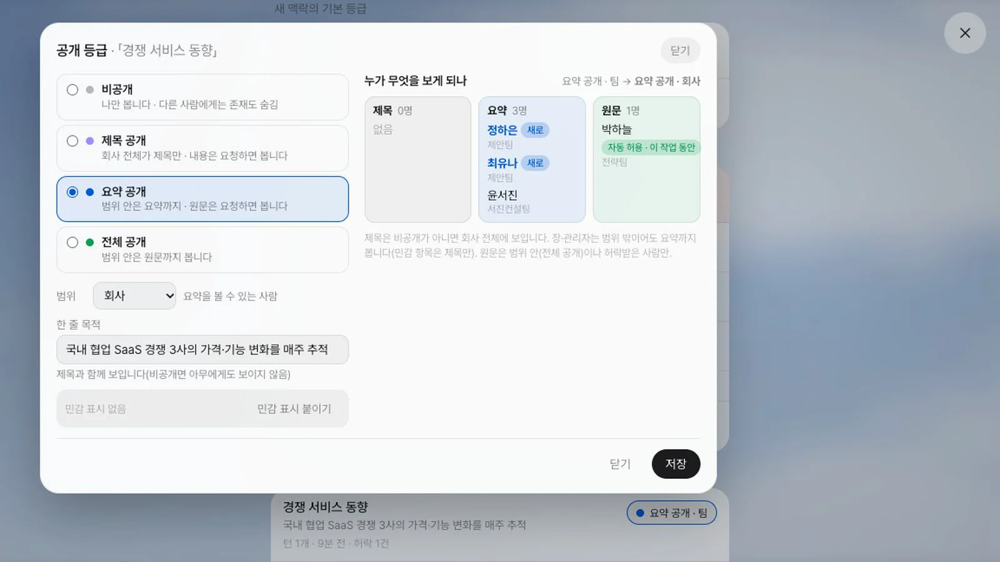
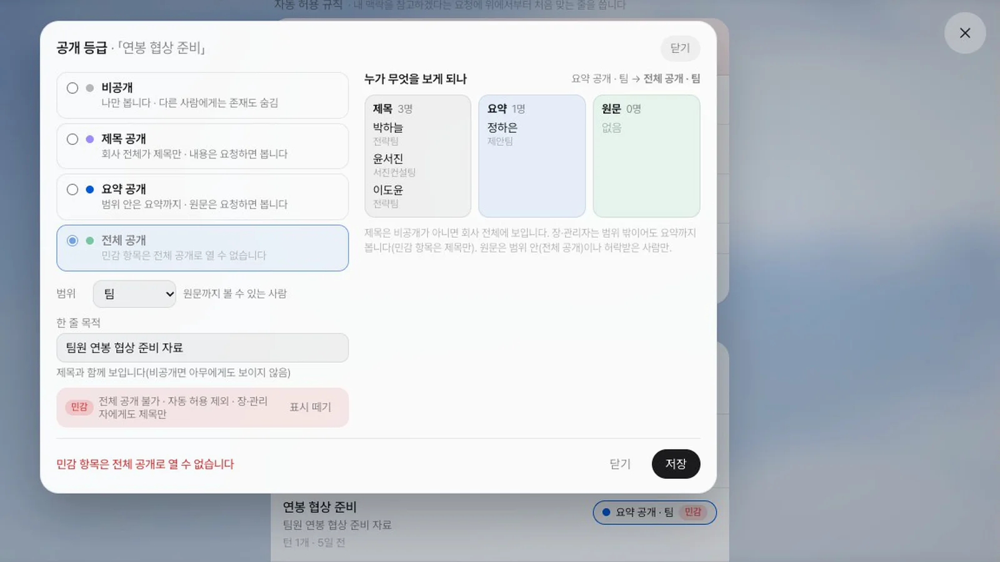
영상: 팀 맥락 공유 ② 팀 활동과 공개 등급 (1:48)
따라 하기 4 — 민감 맥락과 회사 정책#
팀원의 맥락을 참고할지는 주인의 규칙만으로 정하지 않습니다. 26장의 정책 엔진이 먼저 판단하고, 그 판단은 결정 원장에 남습니다. 관리자는 메일·결제 정책과 같은 화면에서 이 정책을 보고 고칩니다.
| 정책 | 언제 | 판단 |
|---|---|---|
| 민감 맥락은 주인이 직접 허락 | 주인이 민감 표시를 한 맥락 | 승인 필요 — 맥락 주인이 홈 카드에서 |
| 민감할 수 있는 주제는 자동 허용하지 않음 | 제목·한 줄 목적·요약에 인사·급여·건강·징계·개인정보 같은 주제가 보이는 맥락(민감 표시 전) | 승인 필요 — 맥락 주인이 홈 카드에서 |
| 팀원 맥락 참고는 기록 | 언제나 | 기록 |
- 윤서진(관리자)으로 로그인해 「설정 › 정책·가드레일」을 엽니다. 「개인정보」 묶음에 앞의 두 정책이, 「기록·감사」 묶음에 세 번째 정책이 있습니다. 주제 정책에는 주제 10개가 칩으로 보이고, 주제 고치기로 「이름 = 패턴」 줄을 회사에 맞게 고칠 수 있습니다. 승인자는 「맥락 주인 — 그 맥락의 주인이 홈 카드에서」입니다.
- 박하늘로 로그인해 채팅에 보냅니다.
3분기 성과급 배분 기준 초안에 영업 지원 직군 기준까지 넣어 표로 정리해 줘답이 오고 30초쯤 지나면, 그 대화 맥락의 요약을 다시 만들면서 같은 주제 목록으로 한 번 더 봅니다. 홈에 「민감 제안 · 민감 표시 제안 · 「…성과급…」」 카드가 옵니다(맥락 이름은 라우터가 정합니다). - 이도윤으로 로그인해 보냅니다.
팀 성과급 배분 기준을 참고해서 우리 팀 보상 원칙 한 쪽을 써 줘칩에 박하늘의 그 맥락이 요약 깊이로 붙습니다. 칩의 원문 요청 → 요청 보내기. 같은 팀은 원래 자동 허용인데, 이번에는 「요청함」으로 남습니다. - 박하늘의 홈에 「참고 요청」 카드가 있습니다. 「회사 정책 「민감할 수 있는 주제는 자동 허용하지 않음」 · 급여 — 자동으로 허락하지 않고 내게 물어요」가 함께 보입니다. 거절을 누르고 사유를 적어 거절 보내기.
- 「설정 › 공유와 허락」 위쪽의 민감 표시 제안을 승인합니다. 자동 허용 규칙 위에 회사 정책 줄 두 개(민감 항목 → 언제나 묻기, 민감할 수 있는 주제가 보이면 → 묻기)가 지울 수 없는 줄로 있습니다.
- 윤서진의 「결정 원장」 탭에 「박하늘의 민감할 수 있는 맥락(제목 가림) 원문 참고 · 승인 필요 · 거절」이 있습니다. 펼치면 판단에 쓴 사실(민감할 수 있는 주제 급여, 같은 팀, 원문, 주인 규칙 자동 허용), 걸린 정책 둘, 거절한 주인이 나옵니다. 이 줄에는 승인 단추가 없습니다. 결정은 주인이 홈 카드에서 합니다.
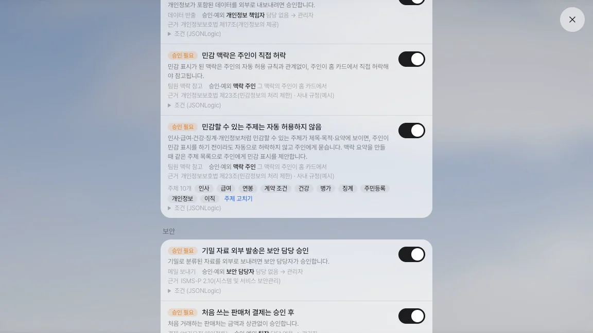
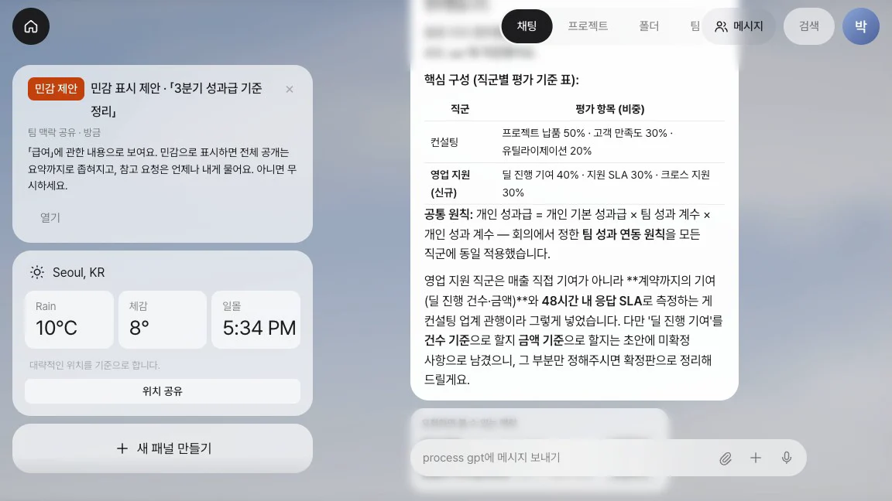
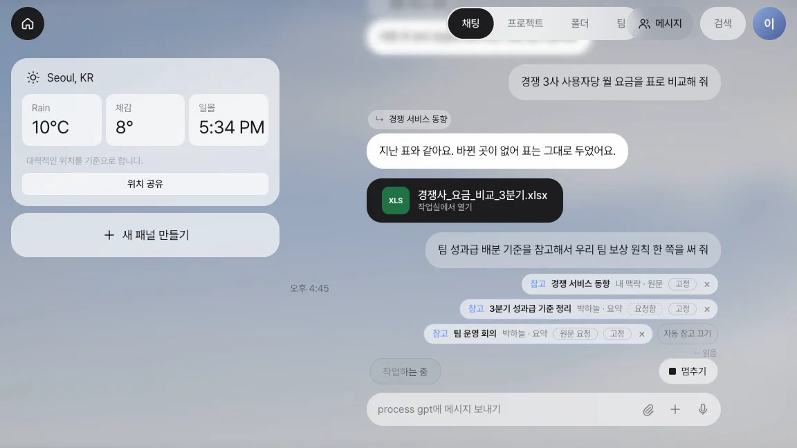
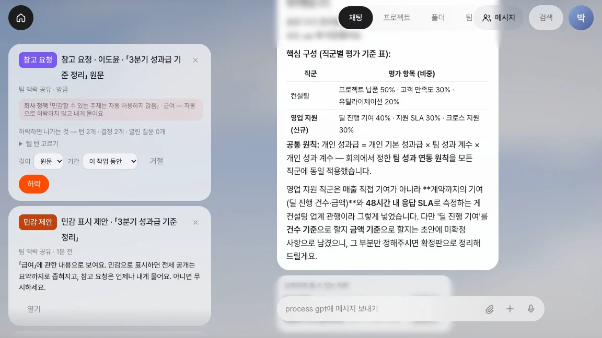
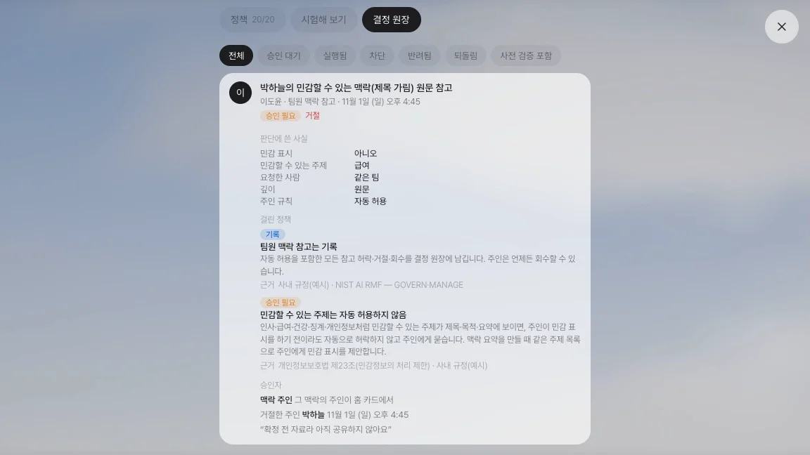
영상: 팀 맥락 공유 ③ 민감 맥락은 회사 정책이 지킨다 (2:11)
정책을 끄면
관리자가 「민감할 수 있는 주제는 자동 허용하지 않음」을 끄면 주제로 묻지 않고 민감 표시 제안도 멈춥니다. 공유와 허락의 주제 줄도 사라집니다. 「민감 맥락은 주인이 직접 허락」을 끄면 민감 맥락도 주인 규칙을 따릅니다. 다른 가드레일처럼 회사의 결정이고, 그 뒤의 판단도 원장에 남습니다. 정책 엔진이 답하지 못하면 주인에게 묻는 쪽으로 갑니다. 원장에는 맥락의 내용이 아니라 판단에 쓴 사실만 남고, 요청한 사람에게는 주제 이름을 알려 주지 않습니다.
알아 둘 점#
- 관련도는 판단 서버의 임베딩으로, 애매한 것(유사도 0.45~0.55)은 기본 AI 모델에 「이 기록이 지금 일에 직접 쓰이나」를 물어 고릅니다. 고르기가 2초를 넘으면 참고 없이 보냅니다.
- 「이 작업 동안」 허락은 요청을 누른 대화에서만, 7일까지 쓰입니다.
- 받은 맥락은 내 기록에 복사되지 않습니다. 내 맥락에는 「어느 맥락을 참고했는지」 출처만 남고, 그 출처를 여는 사람은 자기 권한으로 다시 판정받습니다.
- 조직도에 없는 사람과, 공유 규칙을 정하지 않은 사람의 맥락은 비공개로 다룹니다. 이 기능을 쓰지 않는 설치는 아무것도 바뀌지 않습니다.
- 「이미 한 요청」 알아보기는 0.3~0.4초 걸리고, 4초 안에 끝나지 않거나 판별 모델이 답하지 못하면 묻지 않고 바로 에이전트로 보냅니다. 파일을 붙인 요청도 바로 보냅니다.
- 누가 무엇을 지금 볼 수 있는지(깊이)는 턴마다 규칙으로 바로 정하고, 결정 원장에는 참고 요청(허락의 생애)만 남깁니다.
다음 장에서는 AWS Labs의 AI-DLC로 일하는 개발 팀의 진행 기록을 Lite 홈 패널로 함께 봅니다(28장).
확인 문제
- 박하늘의 「가격 정책 조사」는 요약 공개·팀 범위입니다. 제안팀 정하은에게는 무엇이 보입니까?
- 관리자 윤서진이 이도윤의 비공개 맥락을 주소로 직접 열면 어떻게 됩니까?
- 최유나의 「연봉 협상 준비」에 민감 표시가 승인되었습니다. 같은 팀 정하은이 원문을 요청하면 자동 허용됩니까?
- 최유나의 「분기 정리」(제목 공개)는 답에만 경쟁사 가격 이야기가 있습니다. 이도윤이 경쟁사 가격을 물을 때 요청 후보로 뜹니까?
- 박하늘의 「3분기 성과급 기준 정리」에는 아직 민감 표시가 없습니다. 같은 팀 이도윤의 원문 요청은 자동 허용됩니까?
- 정하은이 「경쟁 서비스 신규 요금제 찾아 줘」를 보냈는데, 같은 요청을 한 이도윤의 맥락은 정하은에게 비공개입니다. 「이미 한 요청」 카드가 뜹니까?
답
- 제목, 주인, 기간, 한 줄 목적만 보입니다. 요약은 범위(전략팀) 안에만 보입니다.
- 「볼 수 없는 맥락입니다」만 나옵니다(404). 비공개 맥락은 관리자에게도 존재가 드러나지 않고, 팀 활동에서 건수로만 셉니다.
- 아닙니다. 회사 정책 「민감 맥락은 주인이 직접 허락」이 걸려 자동 허용 규칙보다 먼저 판단하고, 최유나의 홈에 요청 카드가 갑니다.
- 뜨지 않습니다. 요청 후보의 관련도는 내가 볼 수 있는 깊이의 글(제목과 한 줄 목적)로만 매깁니다. 볼 수 없는 내용으로 관련도를 매기면, 질문을 바꿔 가며 남의 원문을 떠볼 수 있기 때문입니다.
- 아닙니다. 제목에 「성과급」(급여)이 보여 「민감할 수 있는 주제는 자동 허용하지 않음」에 걸립니다. 요청은 박하늘의 홈 카드로 가고, 결정 원장에는 제목을 가린 줄이 생깁니다. 박하늘이 그 맥락의 민감 표시 제안을 「무시」했다면 주제를 보지 않고 같은 팀 규칙대로 자동 허용됩니다.
- 뜨지 않습니다. 비공개 맥락은 후보조차 아니고, 같은 요청인지도 정하은이 볼 수 있는 글로만 따집니다. 에이전트가 새로 답합니다.